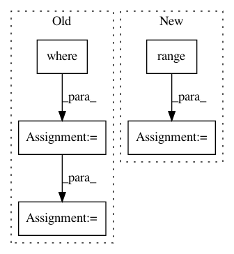

5e854f25098ca40a4ac80197607bf883feaeb375,research/object_detection/utils/learning_schedules.py,,manual_stepping,#Any#Any#Any#,109
Before Change
"number of boundary points by exactly 1.")
step_boundaries = tf.constant(boundaries, tf.int64)
learning_rates = tf.constant(rates, tf.float32)
unreached_boundaries = tf.reshape(
tf.where(tf.greater(step_boundaries, global_step)), [-1])
unreached_boundaries = tf.concat([unreached_boundaries, [len(boundaries)]], 0)
index = tf.reshape(tf.reduce_min(unreached_boundaries), [1])
return tf.reshape(tf.slice(learning_rates, index, [1]), [])
After Change
step_boundaries = tf.constant(boundaries, tf.int32)
num_boundaries = len(boundaries)
learning_rates = tf.constant(rates, tf.float32)
index = tf.reduce_min(
tf.where(
// Casting global step to tf.int32 is dangerous, but necessary to be
// compatible with TPU.
tf.greater(step_boundaries, tf.cast(global_step, tf.int32)),
tf.constant(range(num_boundaries), dtype=tf.int32),
tf.constant([num_boundaries] * num_boundaries, dtype=tf.int32)))
return tf.reduce_sum(learning_rates * tf.one_hot(index, len(rates),
dtype=tf.float32))
In pattern: SUPERPATTERN
Frequency: 4
Non-data size: 5
Instances
Project Name: tensorflow/models
Commit Name: 5e854f25098ca40a4ac80197607bf883feaeb375
Time: 2018-02-13
Author: lzc@google.com
File Name: research/object_detection/utils/learning_schedules.py
Class Name:
Method Name: manual_stepping
Project Name: mne-tools/mne-python
Commit Name: beaff02d91a80c2cf12e626d47b3f1678188472d
Time: 2020-04-22
Author: larson.eric.d@gmail.com
File Name: mne/source_space.py
Class Name:
Method Name: _get_volume_label_mask
Project Name: aertslab/pySCENIC
Commit Name: 6d6a32dd677aa6097c4e77b359f81989c3e949af
Time: 2018-04-05
Author: vandesande.bram@gmail.com
File Name: src/pyscenic/rnkdb.py
Class Name:
Method Name: build_rankings
Project Name: biotite-dev/biotite
Commit Name: 1675e2873db77528ef1dee6fc49aaccfca9a369b
Time: 2020-11-27
Author: tom.mueller@beachouse.de
File Name: src/biotite/structure/dotbracket.py
Class Name:
Method Name: dot_bracket